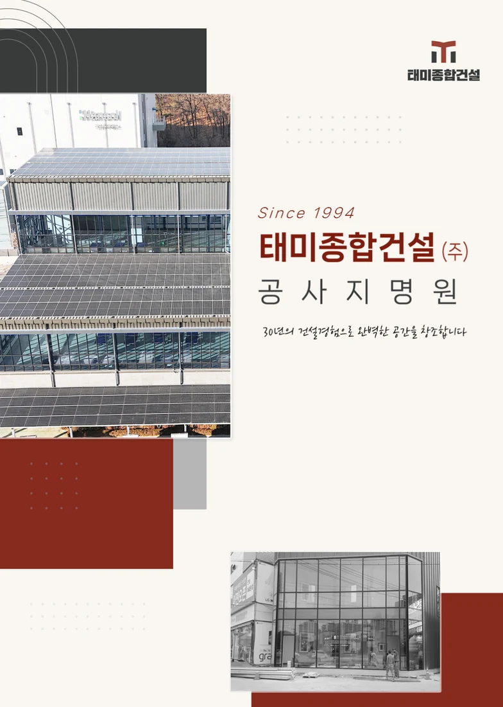
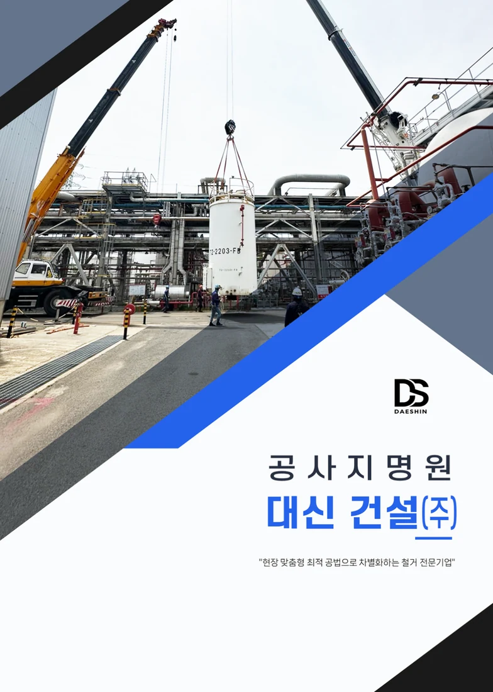
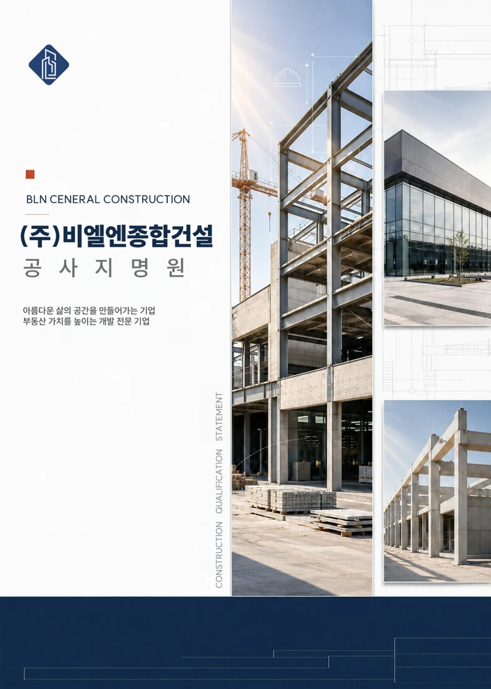
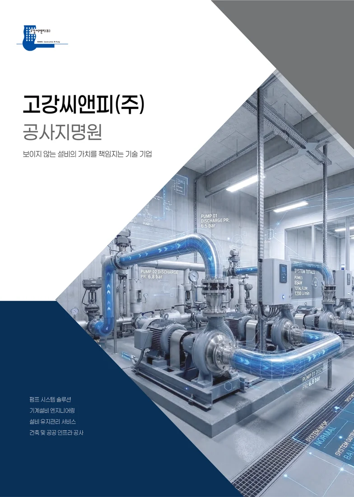
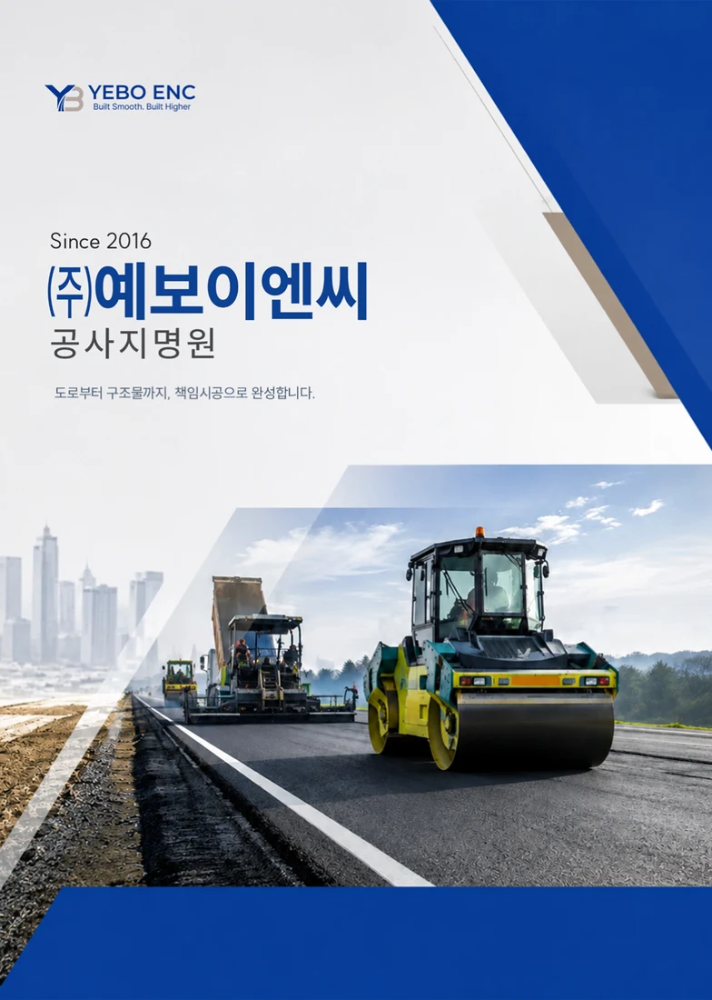

“아직 실적이 많지 않은
신생 회사예요.”
실적 대신 신뢰의 근거를 설계합니다
보유 면허·기술 인력·대표 경력과 시공 역량을 묶어 회사가 믿을 만한 이유를 보여드립니다.
PREMIUM CONSTRUCTION PROFILE
광고대행사 출신 기획자가 자료 분석부터 카피라이팅, 디자인까지 원스톱으로 완성하는 프리미엄 공사지명원 제작 서비스. 처음 상담부터 원본 납품까지 대표가 직접 진행합니다.





“아직 실적이 많지 않은
신생 회사예요.”
보유 면허·기술 인력·대표 경력과 시공 역량을 묶어 회사가 믿을 만한 이유를 보여드립니다.
“자료가 여기저기
흩어져 있어요.”
사업자등록증, 면허, 실적표, 현장 사진만 보내주세요. 빠진 내용은 먼저 제안드립니다.
“현장 사진이 흐리고
쓸 만한 게 없어요.”
빛 번짐·흐릿함을 보정하고 불필요한 요소를 지웁니다. 사진이 없으면 AI 이미지로 완성합니다.
“디자인만 바꿔주는 곳은
아쉬웠어요.”
CEO 인사말, 경영방침, 회사 경쟁력, 메인 카피까지 페이지마다 전달력 있게 작성합니다.
피피티브랜딩은 ‘편집’이 아니라 ‘기획’부터 시작합니다.
업종별 실제 포트폴리오입니다. 사례를 누르면 표지와 내부 페이지, 구성 특징을 자세히 볼 수 있습니다.
PLANNING기획
갖고 계신 자료를 검토해서 빠진 내용을 채우고 어떤 순서로 넣을지 구성해드려요.
각 페이지에 들어갈 제목, 설명 문장을 직접 작성합니다. 회사 강점, 비전, 경영방침 문구 포함.
업종에 따라 품질방침 등 추가 작성 가능DESIGN디자인
회사 분위기에 맞는 색상, 폰트로 전체 디자인 방향을 잡아드려요.
내용을 보기 좋게 정리하고 표·도식·그림으로 시각화해드려요.
빛 번짐, 흐릿함 등 현장 사진을 선명하게 보정하고 불필요한 요소 제거 후 재편집해드려요.
실제 사진이 없어도 사업 내용에 맞는 AI 고품질 이미지를 직접 만들어드려요.
모든 서비스는 고객사의 상황과 요청에 따라 유연하게 조정 가능합니다.
단순히 받은 자료를 배치하지 않습니다. 회사를 한 문장으로 정의하는 카피부터 페이지별 문구까지, 심사하는 사람이 읽기 쉬운 흐름으로 설계합니다.
대표님 이름으로 된 인사말 문장을 직접 작성합니다. 품격 있는 문체로 써드려요.
기존 문구 + 철학 + 대표실적 반영회사 핵심 가치 3~4개 키워드를 잡고 각 방침 설명 문장까지 제작해드려요.
업종·공사 종류 반영어떤 공사를 하는 회사인지 쉽고 명확하게 정리합니다. 사진이 없어도 AI 이미지로 완성해드려요.
AI 이미지 제작 포함강점 3~4개를 기준으로 문구를 제작해드려요.
실적·인력·기술력 반영회사를 한 문장으로 표현하는 대표 카피를 제작합니다. 표지·첫 페이지에 들어가는 핵심 문구예요.
업종·강점 반영해서 제작목차별로 들어가는 제목·설명 문구를 전체 작성합니다. 페이지마다 전달력 있게 따로 써드려요.
단순 편집 아닌 기획 중심 작성입찰 심사에서 신뢰감을 주는 문서가 되도록, 회사의 실적과 경쟁력이 돋보이는 브랜딩 카피까지 직접 작성해 드립니다.
“모든 기업이 가치를 제대로 전달할 수 있도록”
광고대행사에서 7년, PPT 디자인 회사를 운영하며 5년. 30명의 디자이너와 함께 300개 기업, 1,000여 건의 프로젝트를 진행했습니다. 지금은 규모를 키우는 대신 1인 기업으로 하나의 분야를 깊게 연구합니다. 모든 페이지를 대표가 직접 기획하고 확인하기 때문에, 작은 오타 하나와 디자인의 픽셀 하나까지 놓치지 않습니다.
실적이 아직 많지 않은 신생 시공사도 공사를 따낼 수 있도록, 지명원을 어떻게 기획하는지 영상으로 설명합니다.
제작 가이드 글로 보기 →자료와 사용 목적을 확인한 뒤 작업을 시작합니다.
기획·디자인이 완료된 1차 결과물을 PDF로 전달합니다.
전체 디자인 수정 1회, 내용 수정 10회. 대부분 3회 미만으로 완료됩니다.
최종 확인 후 잔금을 입금해 주세요.
직접 수정할 수 있는 원본과 편집 가이드를 함께 드립니다.
세금계산서 발행과 인쇄·출력 안내까지 도와드립니다.
갖고 계신 자료만 보내주세요.
필요한 구성부터 함께 정리합니다.
준비 자료부터 비용·일정, 수정과 납품까지 확인해 보세요.
계약금 50% 입금 후 착수하여, 기획·디자인이 완료된 1차 결과물을 PDF 파일로 전달드립니다. 이후 피드백을 반영한 수정 작업을 거쳐 잔금 입금 후 최종 완료됩니다.
가능합니다. 사업 소개 자료가 전혀 없는 상태에서 시작하신 분들도 많습니다. 공사 종류와 사업 방향에 맞게 필요한 내용을 먼저 제안드리고 함께 완성해 나갑니다.
네, 목차 설계와 스토리라인 기획이 서비스에 포함됩니다. CEO 인사말부터 경영방침, 사업 소개, 회사 경쟁력까지 어떤 순서로 무엇을 보여줄 것인지 함께 정리합니다.
페이지 수뿐 아니라 자료의 준비 상태, 목차·원고 기획 범위, 사진·도표 작업과 납품 형태를 함께 확인합니다. 기존 자료와 사용 목적을 보내주시면 필요한 작업 범위를 정한 뒤 견적을 안내합니다.
제작 일정은 자료의 준비 상태와 분량, 필요한 기획·디자인 범위, 내부 검토 일정에 따라 협의합니다. 희망 납기와 자료를 전달할 수 있는 날짜를 함께 알려주세요.
네, 빛 번짐이나 흐릿함이 있는 공사 현장 사진도 선명하게 보정하고 불필요한 요소를 제거해 재편집해 드립니다. 사진이 아예 없는 경우에는 사업 내용에 맞는 이미지를 AI로 제작해 페이지를 완성해 드립니다.
횟수 제한보다 합리적인 범위 내에서 충분히 반영해 드립니다. 전체 디자인 수정은 1회, 그 외 내용 수정은 10회이며 대부분 3회 미만으로 완료됩니다.
네, 공사지명원 PPT 원본 파일로 납품드리기 때문에 내부에서 텍스트나 이미지를 직접 수정하실 수 있습니다. 편집 방법 가이드도 함께 전달됩니다.
PDF 파일로 출력하실 수 있도록 안내드리며 용지 종류와 출력 방법도 함께 안내해 드립니다. 필요하신 경우 협력 인쇄 업체도 소개해 드립니다.
네, 세금계산서 발행 처리가 가능합니다.
Strategy. Design. Impact.